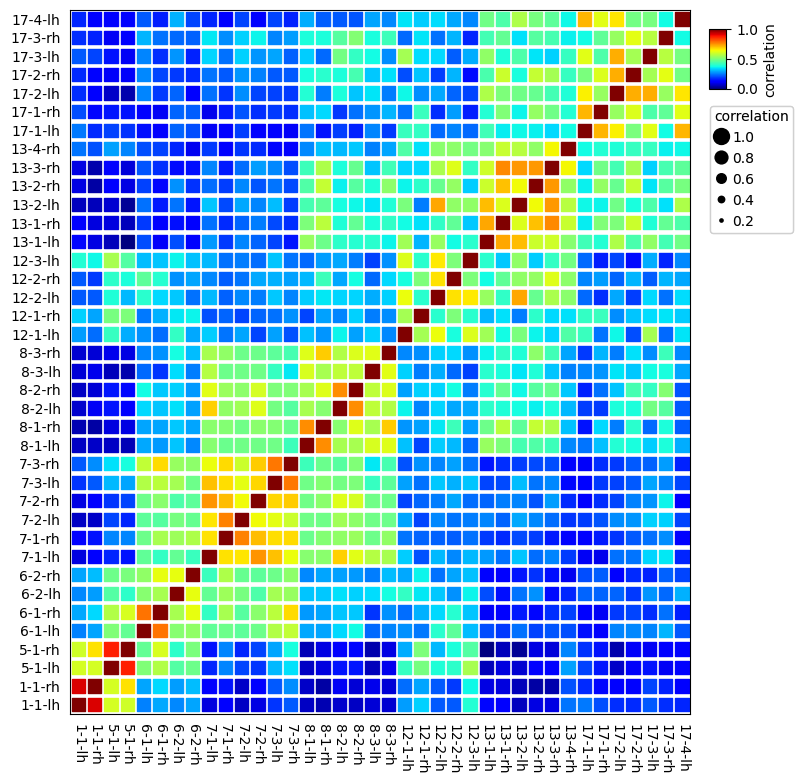

1. Import packages¶
[1]:
import os,sys
%matplotlib inline
import matplotlib.pylab as plt
import pickle
plt.rcParams['figure.dpi'] = 100
plt.rcParams['savefig.dpi']=300
sys.path.append(os.path.expanduser("~/Projects/Github/PyComplexHeatmap/"))
import PyComplexHeatmap
from PyComplexHeatmap import *
2. Load an example brain networks dataset from seaborn¶
[2]:
import seaborn as sns
# Load the brain networks dataset, select subset, and collapse the multi-index
df = sns.load_dataset("brain_networks", header=[0, 1, 2], index_col=0)
used_networks = [1, 5, 6, 7, 8, 12, 13, 17]
used_columns = (df.columns
.get_level_values("network")
.astype(int)
.isin(used_networks))
df = df.loc[:, used_columns]
df.columns = df.columns.map("-".join)
# Compute a correlation matrix and convert to long-form
corr_mat = df.corr().stack().reset_index(name="correlation")
corr_mat['Level']=corr_mat.correlation.apply(lambda x:'High' if x>=0.7 else 'Middle' if x >= 0.3 else 'Low')
data=corr_mat.pivot(index='level_0',columns='level_1',values='correlation')
[3]:
data.head()
[3]:
| level_1 | 1-1-lh | 1-1-rh | 12-1-lh | 12-1-rh | 12-2-lh | 12-2-rh | 12-3-lh | 13-1-lh | 13-1-rh | 13-2-lh | ... | 7-2-lh | 7-2-rh | 7-3-lh | 7-3-rh | 8-1-lh | 8-1-rh | 8-2-lh | 8-2-rh | 8-3-lh | 8-3-rh |
|---|---|---|---|---|---|---|---|---|---|---|---|---|---|---|---|---|---|---|---|---|---|
| level_0 | |||||||||||||||||||||
| 1-1-lh | 1.000000 | 0.881516 | -0.049793 | 0.026902 | -0.144335 | -0.141253 | 0.119250 | -0.261589 | -0.272701 | -0.370021 | ... | -0.366065 | -0.325680 | -0.196770 | -0.144566 | -0.366818 | -0.388756 | -0.352529 | -0.363982 | -0.341524 | -0.350452 |
| 1-1-rh | 0.881516 | 1.000000 | -0.112697 | -0.036909 | -0.144277 | -0.189683 | 0.084633 | -0.324230 | -0.332886 | -0.374322 | ... | -0.361036 | -0.274151 | -0.142392 | -0.070452 | -0.358625 | -0.402173 | -0.302286 | -0.339989 | -0.315931 | -0.343379 |
| 12-1-lh | -0.049793 | -0.112697 | 1.000000 | 0.343464 | 0.470239 | 0.100802 | 0.438449 | 0.339667 | 0.089811 | 0.272394 | ... | -0.036493 | -0.171179 | -0.043298 | -0.158039 | 0.005598 | -0.060007 | 0.079078 | -0.040060 | 0.027878 | -0.075781 |
| 12-1-rh | 0.026902 | -0.036909 | 0.343464 | 1.000000 | 0.130549 | 0.278569 | 0.127621 | -0.014404 | 0.051249 | -0.090130 | ... | -0.170053 | -0.124278 | -0.112148 | -0.063705 | -0.172007 | -0.040629 | -0.079687 | 0.024864 | -0.092263 | -0.068858 |
| 12-2-lh | -0.144335 | -0.144277 | 0.470239 | 0.130549 | 1.000000 | 0.521377 | 0.506652 | 0.320966 | 0.141884 | 0.608392 | ... | -0.075986 | -0.095015 | 0.012966 | -0.082816 | 0.023340 | 0.058718 | 0.034181 | 0.033355 | -0.022982 | 0.025638 |
5 rows × 38 columns
[4]:
corr_mat.Level.value_counts().index.tolist()
[4]:
['Low', 'Middle', 'High']
3. Dot Heatmap¶
Plot traditional heatmap using square marker marker='s'¶
[5]:
plt.figure(figsize=(8,8))
ax=dotHeatmap(corr_mat,x='level_0',y='level_1',value='correlation',
cmap='jet',vmax=1,vmin=0,s=0.7,marker='s')
ax.grid(which='minor',color='white',linestyle='--',alpha=0.6,linewidth=0.1)
plt.show()

Simple dot heatmap using fixed dot size¶
In default, using circle marker: marker='o'
[6]:
plt.figure(figsize=(8,8))
ax=dotHeatmap(corr_mat,x='level_0',y='level_1',value='correlation',
cmap='Reds',vmax=1,vmin=0,s=0.5)
# ax.grid(which='minor',color='gray',linestyle='--',alpha=0.6)
# ax.grid(which='major',color='black',linestyle='--',alpha=0.2)
plt.show()

Changing the size of point¶
In default, we determined the size of the points based on the value col if parameter s was not given
[7]:
plt.figure(figsize=(8,8))
ax=dotHeatmap(corr_mat,x='level_0',y='level_1',value='correlation',
cmap='Reds',vmax=1,vmin=0)
ax.grid(which='minor',color='gray',linestyle='--',alpha=0.4)
# ax.grid(which='major',color='white',linestyle='--',alpha=0.4)
plt.show()

Add parameter hue and use different colors for different groups¶
[8]:
plt.figure(figsize=(8,8))
ax=dotHeatmap(corr_mat,x='level_0',y='level_1',value='correlation',hue='Level',
colors={'High':'red','Middle':'purple','Low':'green'},vmax=1,vmin=0)
plt.show()

Add parameter hue and use different cmap and marker for different groups¶
[9]:
plt.figure(figsize=(8,8))
ax=dotHeatmap(corr_mat,x='level_0',y='level_1',value='correlation',hue='Level',
cmap={'High':'Reds','Middle':'Purples','Low':'Greens'},
colors={'High':'red','Middle':'purple','Low':'green'},
marker={'High':'P','Middle':'*','Low':'D'},
vmax=1,vmin=0)
plt.show()

[ ]: